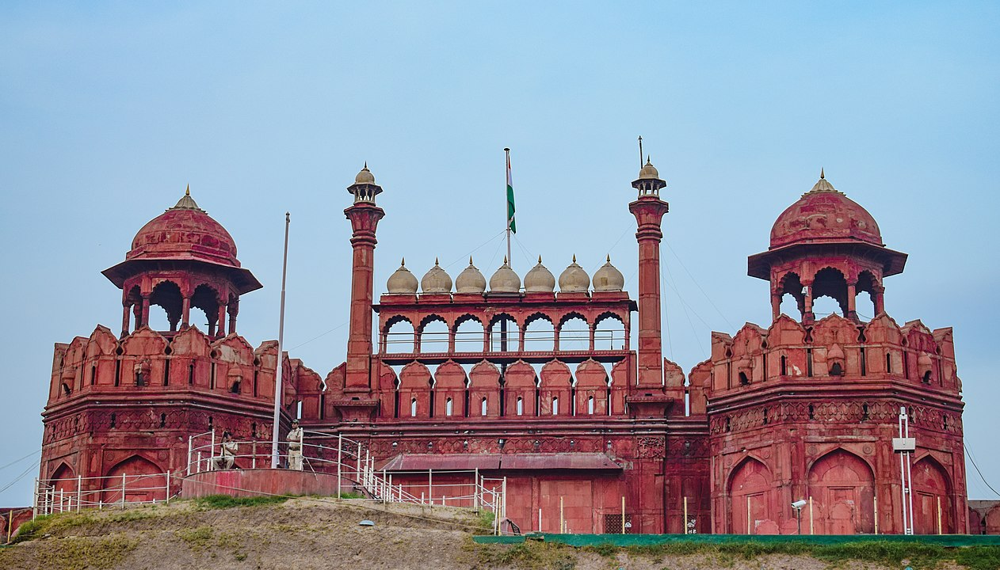

Despite its crowds and chaos, New Delhi offers tourists a lot to love. The colorful capital of India is the perfect marriage of heritage and modernity. Old Delhi contains some of the country's most treasured attractions, including the Jama Masjid, Red Fort, and Chandni Chowk shopping thoroughfare. But throughout the sprawling city, tourists can explore countless other sites of spiritual and cultural importance.
Top tourist attractions in New Delhi include the Lotus Temple; India Gate; Humayun's Tomb; and India's tallest minaret, Qutub Minar. Fill your days exploring these mesmerizing sites, and refueling at street-side chai stalls and high-end restaurants.
The Red Fort
The Red Fort is a historic fort in the city of Delhi in India that served as the main residence of the Mughal Emperors. Emperor Shah Jahan commissioned construction of the Red Fort on 12 May 1638, when he decided to shift his capital from Agra to Delhi.
A great way to see the Red Fort and other top-rated attractions is by booking a private full-day tour of Old and New Delhi. Highlights of this nine-hour urban adventure include a personal professional guide and driver who'll take you to such points of interest as Humayun's Tomb, Qutub Minar, as well as Jama Masjid, India Gate, and the famous Lotus Temple. Included with your tour are hotel pickup and a ride in a rickshaw.
Address: Netaji Subhash Marg, Lal Qila, Chandni Chowk, New Delhi, Delhi 110006
Built: 12 May 1639 – 6 April 1648; (8 years, 10 months and 25 days)
The Qutub Minar
Completed in the 12th century, the beautiful Qutub Minar-India's tallest minaret and now a UNESCO Word Heritage Site-attracts many international visitors eager to climb to the top for its breathtaking views of the surrounding area.
This ornate five-story tower rises more than 70 meters and is covered with intricate carvings featuring the history of Qutub along with inscriptions from the Koran. It's also notable for being constructed of a number of different types of stone (the first three stories are made of red sandstone, while the fourth and fifth stories were built with marble and sandstone).
A variety of other important tombs can be seen in Lodi Gardens, a New Delhi city park that covers some 90 acres of land. This former Lodi site (the Lodi's ruled parts of northern India prior to the 1600s) is a particularly popular spot for residents to stroll, making it an exceptional destination for tourists.
Address: Mehrauli, New Delhi, Delhi 110030
The Lotus Temple

The magnificent Bahá'í House of Worship, also known as the Lotus Temple due to its nine sides and stunning central dome, is an architectural masterpiece. Constructed of white concrete and marble, the entire structure looks as delicate as the flower it resembles. Rising from the surrounding nine pools of water, it almost appears as if it might burst into bloom at any moment. Built in 1986, the temple has since attracted more than 70 million visitors, making it one of the world's most visited attractions (interestingly, this remarkable place of worship has no idols, religious pictures, or outward symbols of religion).
Address: Lotus Temple Road, Shambhu Dayal Bagh, Bahapur, New Delhi, Delhi 110019
The India Gate
Looking a little like the famous Arc de Triomphe in Paris, the equally impressive India Gate is a magnificent stone arch built as a memorial to Indian soldiers killed in WWI. An eternal flame burns beneath the massive structure, and its walls are inscribed with the names of more than 90,000 soldiers who died in the conflict.
Standing on a base of red stone and featuring a shallow domed bowl on top that is occasionally filled with burning oil (usually only on important anniversaries), the structure dominates the parkland around it, an always busy area with crowds of tourists and locals alike enjoying a picnic or simply relaxing. For a real treat, try to see the India Gate at night, considered one of the top free things to do in New Delhi; it's a spectacular sight when it and nearby fountains are floodlit.
Address: Rajpath, India Gate, New Delhi, Delhi 110001